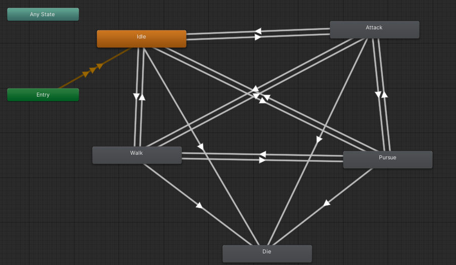

Dragon's pit is a playable simulation that uses FSM
model to control the animation of an AI dragon character.
Project Info
Role: AI Programmer
Type: Playable Simulation
Engine: Unity (C#)
Introduction
Dragon's pit was a fun and useful project for me where I had the opportunity to implement Finite State Machine model.
FSM is used here for the animation system of a dragon agent.
I had decided to make the simulation playable with high quality assets so I could learn more about how to implement complex animation
system and programming design patterns as they are practiced in AAA games.
The simulation world consists of a player, dragon, landscape, ruins, magical trap and a dragon's egg. The player character is an FPC that can be controlled by arrow keys to move around. The Dragon is the AI agent that uses NavMesh Agent component attached to it.
After setting up the scene, I imported unity standard assets and used FPC (first person controller) asset as the player.
Then I added colliders to the props and dragon agent. I attached a 'black vortex' VFX to the trap game object and another fire VFX to the dragon's egg.
I added a navigation map to the landscape game object and baked it to the scene as it'd be the surface the dragon will navigate on.
NavMesh map - Scene viewScene view
Gameplay
I made the simulation playable, sort of like a mini-game, so I can practise how to program an AI agent in a game and how to solve problems
I might face in different scenarios.
The gameplay here is simple : the red dragon is guarding her own egg in what is left of a dragon's pit, the player
has to drag the dragon to the black magical vortex to kill her and take the egg to win.
Dragon Animation System
Finite State Machine model is used in this simulation to control the behavior of a dragon agent by controlling its animation
system. I started with writing the main class that the other states (actions) will inherit from.
The dragon agent has five animations: Idle, Walk, Pursue, Attack and Die.
Each of these animations is considered a state that the State Machine control its flow, so the State Class
have all these animations stored in an enum.
Any state in the State Machine has three processes that run at a different time: Enter, Update and Exit.
These processes (events) are also stored in an enum. Then using a virtual method for each process, the methods will be overridden by
each state settings, triggers and rules.The Process method control the flow from one stage to another for each action and calls the
method for the current stage.It also ensures to call the next state in the exit method.
The Update process is where the state machine decides when to transition to the next state or stay running the current one,
if the condition is met then the exit process is run and the next state starts running by calling the enter process.

Dragon's AnimatorDragon's Idle Clip
Idle State
After all the states that inherit from the main state class are written, the Dragon script is written and attached to the
dragon character. The dragon class will inherit from MonoBehaviour but can access the state class using composition.
In the Start method the Idle state is called as the entry point to the whole State Machine, then gets access to other states
using the method Update Process that calls the process method in the state class.
The Idle state : similar to other states, inherit from the state class and overrides the Enter, Update and Exit method.
The enter method triggers the Idle animation, then the update method is called which calls the method 'Can See Player',
if it returns true the Pursue state is called, if it returns false then the Walk state is called at random.
Once the State machine pick the next state, the exit method is called and the reset trigger is called for the Idle animation, so that
the next time the Idle state is called, the animation clip will start from the beginning.
Idle State FlowchartDragon's Idle State
Walk State
Game Environment: To make the dragon walk, I implemented a system in the 'Game Environment' script where the dragon agent
access the waypoints from a Singleton to ensure that there is only one instance of each waypoint and that more could be added
later without the need to adjust the script.
I started by setting cubes game objects in the scene and later turn off their mesh renderer, as they are only needed as check points
for when the dragon reach each one of them. Then in the 'Game Environment' script, they are accessed and stored in a list ordered by
name using the LINQ library.
The Walk State: starting from the Enter overridden method, the walk state was implemented by assuming that the closest
waypoint is the one to walk towards (measured using vector distance method), then in the Update overridden method once its reached
(measured using remaining distance method) the next checkpoint in the list is assigned as the target waypoint and the dragon can walk towards
it using set destination method and trigger the Walk animation.
The Update method also calls the 'Can See Player' method, if it returns true the Pursue state is called, if it returns false then the Walk
state continues running. Once the State machine pick the next state, the exit method is then called.
Walk State FlowchartDragon's Walk State
Pursue State
Can See Player Method: Since the other states use this method to enter the pursue state, I wrote this method
in the main state class, so it could be accessed from the other states. The method calculates the angle and the distance between
the player and the dragon character then compares the result with 'visible angle' and 'visible distance', which are both variables
I tested to reach the desired agent behavior. The method returns true if the player is both close and within the dragon's visual field.
The Pursue State: starting from the Enter overridden method, the pursue animation is triggered.
In the Update method, the dragon agent follows the player using 'set destination' method, then stops within a certain distance.
The Update method also call the 'has path' method which will return true if the agent has a path to attack the player and false otherwise.
If it returns false, then the pursue state continues running. If it return true then the 'Can Attack Player' method is called, if it
returns true then the State Machine pick the next state which is Attack state. if it returns false, meaning the dragon has a path but can't attack
the player, then I had to check if the dragon can still see the player which is why I used 'Can See Player' method again to check
if the dragon should continues pursuing or the switch to the Walk state.